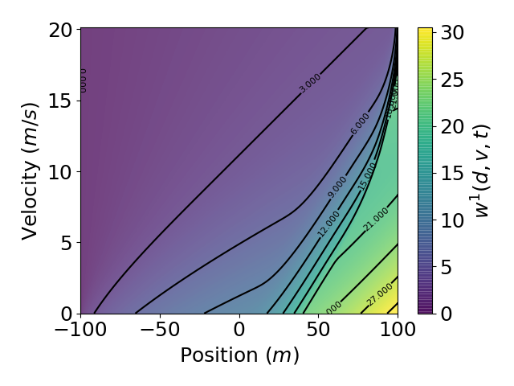
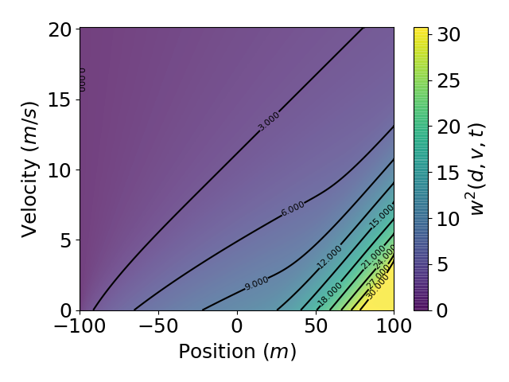
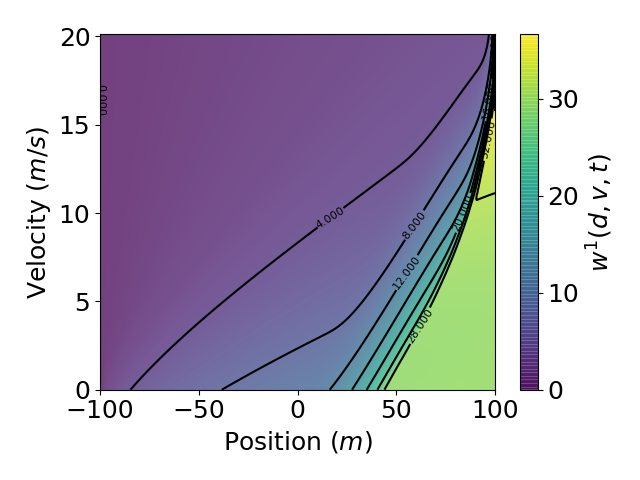
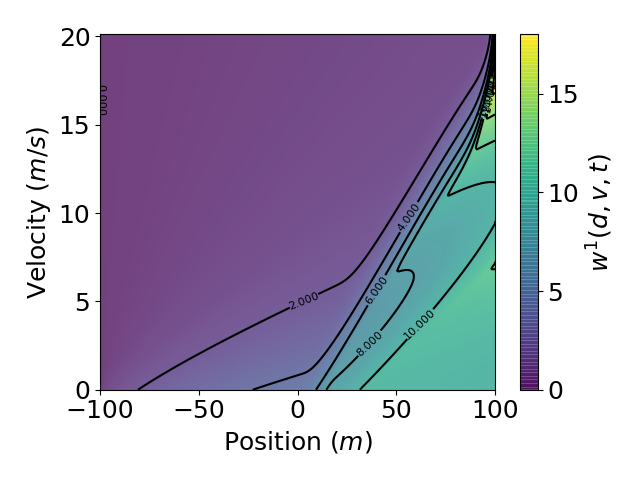
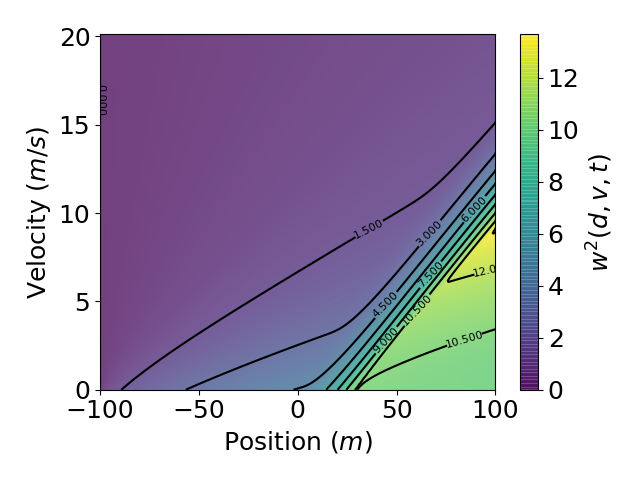

Planning During the Uncertain Green Phase
These supplemental movies and figures correspond to Examples 4 and 5 of the following paper:
Planning During the Uncertain Green Phase: \(\tilde{T}_{Y} \in \{T_1, T_2\}\)
These animations and additional figures correspond to Example 4 in the Optimal Driving manuscript.
- Two possible turning yellow times: \(\tilde{T}_{Y} \in \{2s, 6s\}\)
- Driver begins planning at \(t = 0\).
- There are no obstacles present in the domain while turning-yellow time is uncertain.
Example 4.1: \((p_1, p_2) = (0.5, 0.5)\) and \((c_1, c_2, c_3) = (1/3,1/3,1/3)\)
Feedback Controls:
- The animation below illustrates the Example 4.1 feedback controls over the entire uncertain planning horizon from \(t = 0\) to \(t = 6s\).
Value Function Contour Plotting:
This section displays two snapshots of the value function contours during the uncertain green phase.
- Value functions \(w^1(d,v,t)\) and \(w^2(d,v,t)\) are finite at all points in the domain during this phase.
\(w^1(d,v,t)\) at \(t = 0s\):
\(w^2(d,v,t)\) at \(t = 2s\):
Example 4.2: \((p_1, p_2) = (0.95, 0.05)\) and \((c_1, c_2, c_3) = (1/3,1/3,1/3)\)
Feedback Controls:
- The animation below illustrates the Example 4.2 feedback controls over the entire uncertain planning horizon from \(t = 0\) to \(t = 6s\).
Value Function Contour Plotting:
This section displays two snapshots of the value function contours during the uncertain green phase.
- Value functions \(w^1(d,v,t)\) and \(w^2(d,v,t)\) are finite at all points in the domain during this phase.
\(w^1(d,v,t)\) at \(t = 0s\):
\(w^2(d,v,t)\) at \(t = 2s\):
Example 4.3: \((p_1, p_2) = (0.5, 0.5)\) and \((c_1, c_2, c_3) = (0.15,0.75,0.1)\)
Feedback Controls:
- The animation below illustrates the Example 4.3 feedback controls over the entire uncertain planning horizon from \(t = 0\) to \(t = 6s\).
Value Function Contour Plotting:
This section displays two snapshots of the value function contours during the uncertain green phase.
- Value functions \(w^1(d,v,t)\) and \(w^2(d,v,t)\) are finite at all points in the domain during this phase.
\(w^1(d,v,t)\) at \(t = 0s\):
\(w^2(d,v,t)\) at \(t = 2s\):
Planning During the Uncertain Green Phase: \(\tilde{T}_{Y} \in \{T_1, T_2, T_3\}\)
These animations and additional figures correspond to Example 5 in the Optimal Driving manuscript.
- Three possible turning yellow times: \(\tilde{T}_{Y} \in \{2s, 4s, 6s\}\)
- Driver begins planning at \(t = 0\).
- Light change probabilities: \((p_1,p_2,p_3) = (0.25, 0.25, 0.5)\)
- Driver's objective preferences: \((c_1, c_2, c_3) = (1/3,1/3,1/3)\)
- No obstacles present in the domain while turning-yellow time is uncertain.
Feedback Controls:
- The animation below illustrates the Example 5 feedback controls over the entire uncertain planning horizon from \(t = 0\) to \(t = 6s\).
Value Function Contour Plotting:
This section displays three snapshots of the value function contours during the uncertain green phase.
- Value functions \(w^1(d,v,t)\), \(w^2(d,v,t)\), and \(w^3(d,v,t)\) are finite at all points in the domain during this phase.